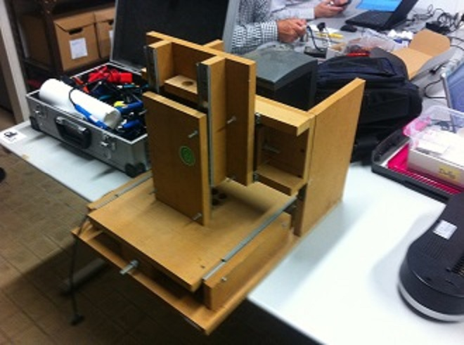
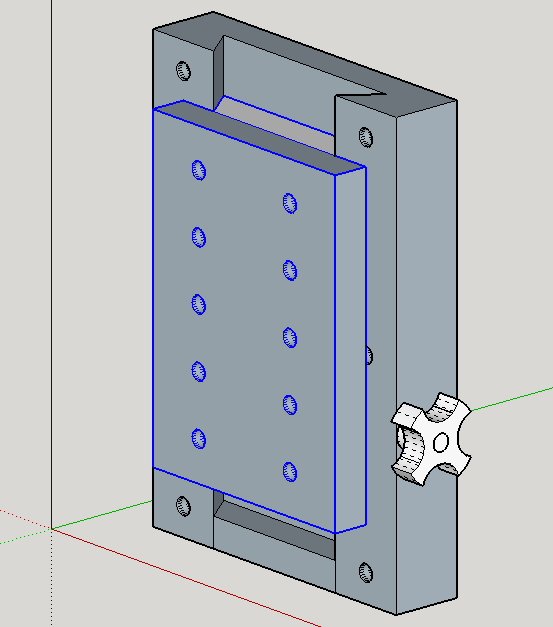
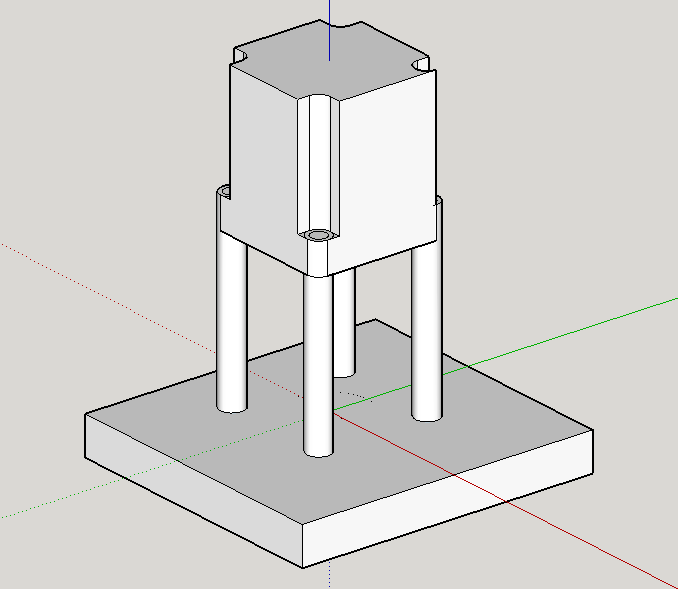

AltCNC
Renascimento da CNC do Lab como CNC multifunções para:
Produção de PCB
Milling and Drilling
PasteExtrusion
Tabuleiro multiusos
Estado Actual

Mecanica
adaptador multiferramenta

Dilling Head
Estrusora Universal também para Pasta de Soldar
opções / inspiração Universal paste extruder
Fresa CNC
Electrónica
Controlador de Steppers
Controlador Mestre
Software
Software de Controlo de CNC
linuxCNC baseado no EMC - Enhanced Mahine Controller
Necessidade actuais:
Arduino ADK 2560 {sanguinolulu, Freeduino}
Controladores dos motores steppers
Leitor SD Card
LCD 4 linhas
Fonte ATX
reconstrução do sem fim da cabeça Z {- 1 X parafuso M8, 6 - porcas M8, 2 - Rolamentos}
desenvolvimento dos suportes dos motores X,Y,Z
Acopladores 5mm/8mm para motores X,Y,Z ao parafusos Sem-fim
determinação das caracteristicas dos motores de passo a passo disponíveis e respectiva adaptação à estrutura mecãnica
desenvolvimento do sistema de troca rápida de ferramenta {cabeça de furação, cabeça de extrusão, cabeça de fresagem.}
Descrição dos passos de montagem
Montagem dos Steppers

Recursos
OS - CAD / CAM / CNC Control SW Listing VS*150604
Mach3 VS LinuxNC & Jitter Problems and Solutions - Forum thread